这句话是John Lennon的一首歌《Beautiful Boys》里的一句歌词，这首歌是John写给他和小野洋子唯一的儿子Sean的歌。然后 我稍微普及了下关于约翰列侬以及小野洋子的事情，额，怎么说呢，摇滚区就一个字“乱”。至于好坏我不做评论了。

这句话还是很不错的，我觉得我确实也是需要这样的勇气去和别人沟通。

确实很多时候，艺术家都是敢于去分享自己的天赋和想法，就好比那个小野洋子吸引列侬的那场剪衣服的演出确实需要很大的勇气。
接下来说下这个画面中的老师，虽然我们后来知道这个艺术学校的老师其实就是个禽兽，但是它说的这几句话本身是没什么毛病。

这个场景是在埋与《Twin Peak》的彩蛋。

这张照片是我当时给bia写示爱公众号时在网上找的题图，还是挺适合的当公众号题图的，横版的布局，画面也很漂亮，特别适合圣诞期间🎄去使用。
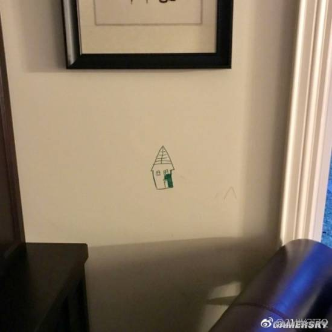
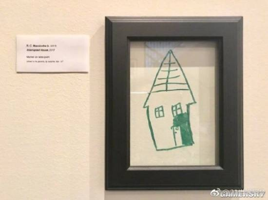
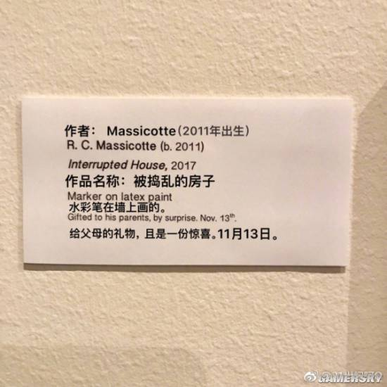
这三张图片是讲的一个很好的父母教育孩子的例子。很多时候孩子在墙上的乱画，有些时候是艺术创作，父母想表达对孩子的创作赞扬，但同样也想委婉的教育下孩子然后记录下这一时刻，于是通过这种方式还是挺不错的。感觉可以借鉴下，以后我有孩子了也要采取这种类似的教育方式，就跟那个治水的道理一样，要疏堵兼顾。
这张照片是我当时拼图时的一张图片。那个时候我很喜欢看网球王子，虽然后来才知道这个是女性向的一部动漫，但当时里面很多的剧情还是很搞笑的。然后这个也是当时我姐送给我的礼物。一共1000块我拼了好久才拼好，不过这个拼图背后有数字好拼多了，不像之前的一幅拼图泰坦尼克号，背后没有数字，然后正面完全不知道怎么拼，看到rose的头发那块，一大片都是一个颜色，因为像素本来就不高，所以分辨起来极为困难。
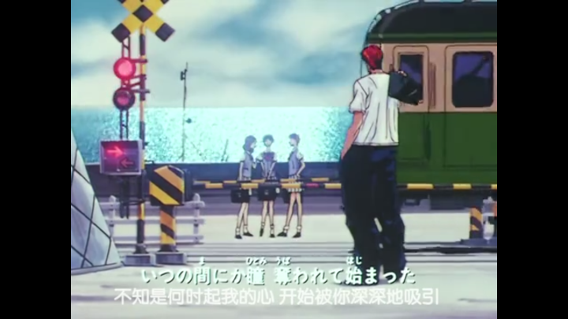
这个是灌篮高手经典的一个场景，如今成了很多人去日本旅行的打卡地点，记得那个西卡当时去日本玩为了拍这个场景特意把头发染成了红色哈哈。
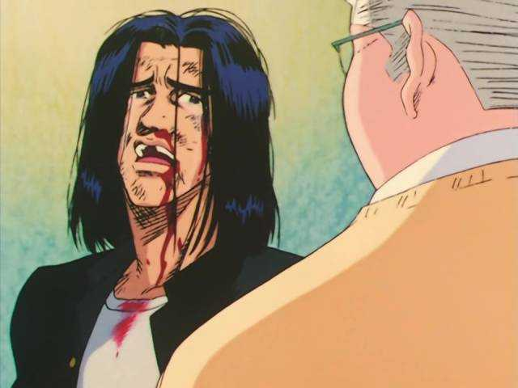
三井寿的表情和经历真是深有同感，那种面对挥霍天赋的悔恨，但是我有时候就是没有那种勇气去重新尽力而为。
樱木的这句话或者就是那时候为什么人们喜欢看灌篮高手，喜欢樱木的一个缩影。简单的台词，但是确实相当有深意。因为樱木绝对不是剧里那个真正的天才，或许流川枫才是。但是樱木这个态度和这种坚信的强大心里才促成他那次集训疯狂的投篮。不服输，自信！这确实就是很多人包括我需要的。
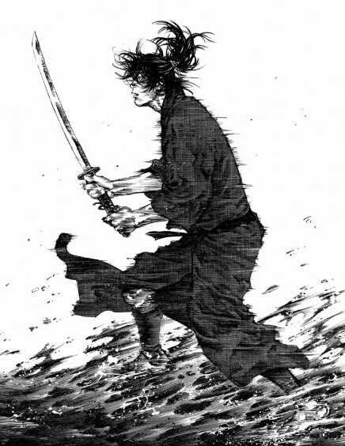
这是当时找的井上雄彦的浪客行，很有韵味的一张图。但是说实话这部动漫我知道画工很棒，因为我看过纪录片，井上雄彦是用毛笔画漫画的，但是这个讲的历史我完全不懂，所以看不太下去。
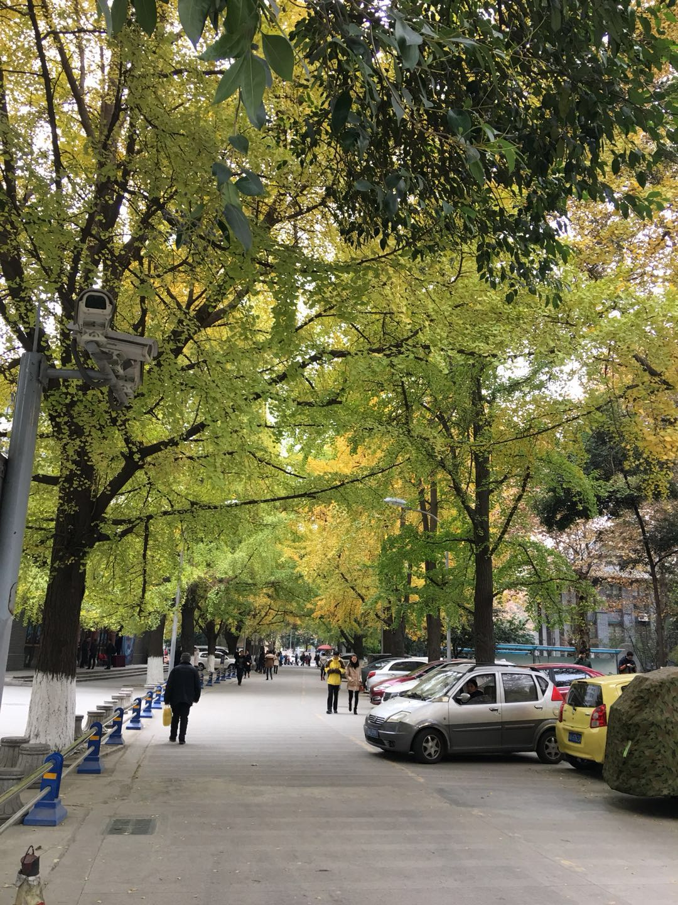
这个哈哈，就是bia平时上下班走的路了，她之前拍的发给我看的。
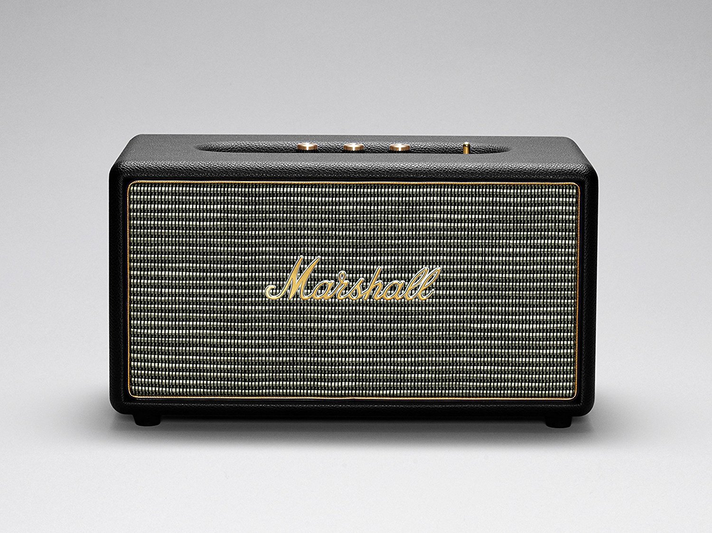
这个是那次我趁eBay搞活动全场八折帮bia买的音箱，我自己在带回去之前还听过，音质可以，蓝牙的。我记得当时运的时候还挺麻烦的，我从亚特兰大这边一路拉过来，到郑州在顺丰寄走的。不过bia喜欢就行，颜值蛮高的音箱，摆在家里也好看，许多音箱其实都容易吃灰，这种情况下一个好看的音箱就能发挥作用了。
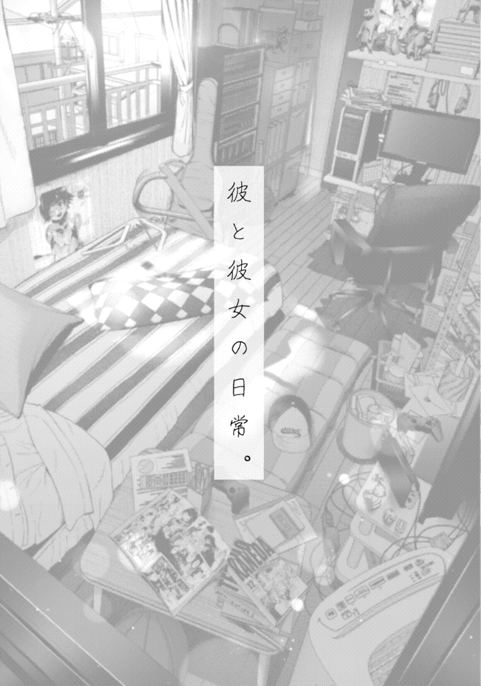
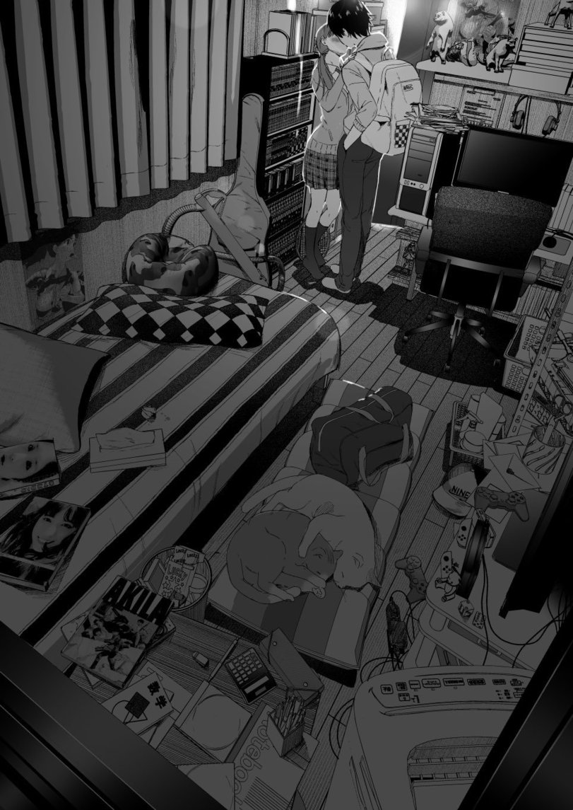
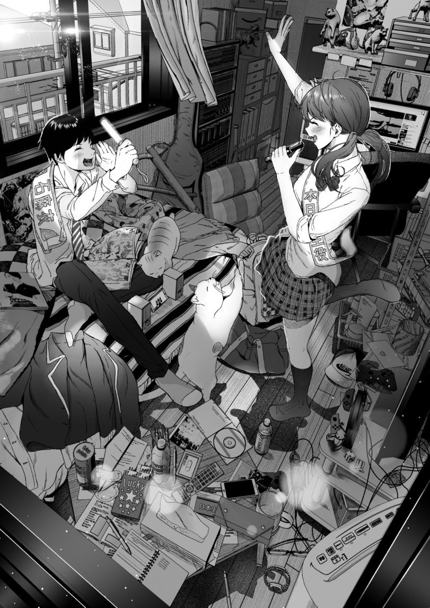
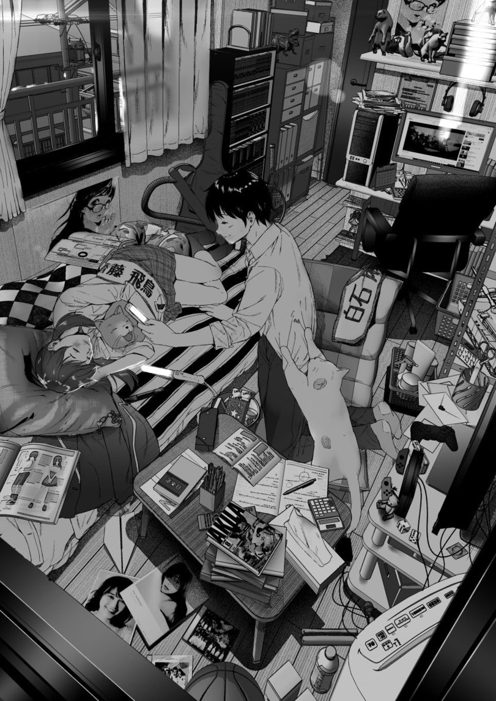
这个是在一个网站上看到的，一个描述日本高中生情侣的日常，还是蛮温馨的，日本漫画在描写这些东西上很在行。


啊哈，这个是shake shack，颜值很高的一家网红快餐店，全美都很火爆，有一家离之前住的地方满顺路，所以吃过几次，那时候就是提升幸福感用的，卡路里换幸福感，挺划算的买卖哈哈，所以叫肥宅快乐水。不过讲道理，这家店没有chick-fil-a好吃，也没它实惠。

这个是所谓的π mile 长跑圈图，叫π mile是因为，这个loop是全长差不多3.14多miles，然后将近5km。这个后来又被命名为Tyler Brown，因为这个人生前好像是在学生会然后致力于这个长跑运动的开展，然后他在2004年在伊拉克参军时被杀害。这个长跑活动春天有一次，秋天也有一次，秋天那次叫Halloween 5K更像是服装游行。

这个唐老鸭的这句话，其实有时就是自己的真实写照，哎，惭愧。
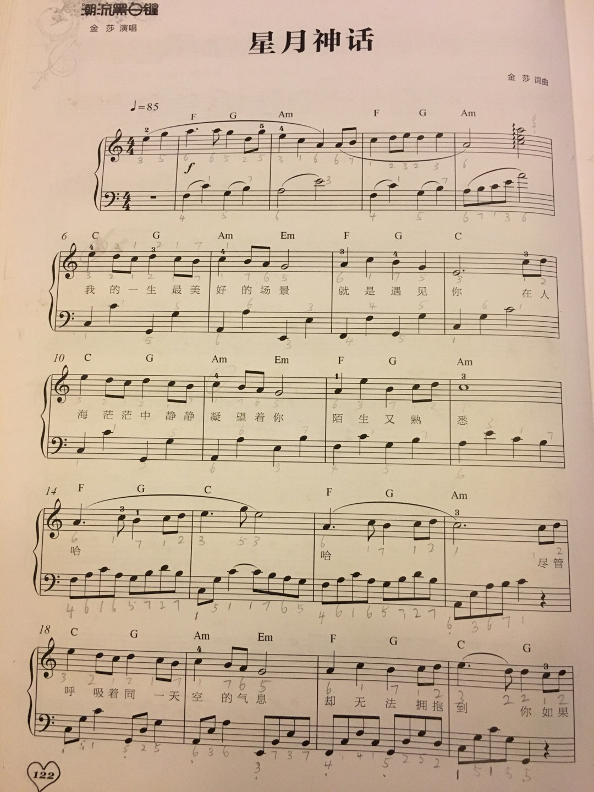
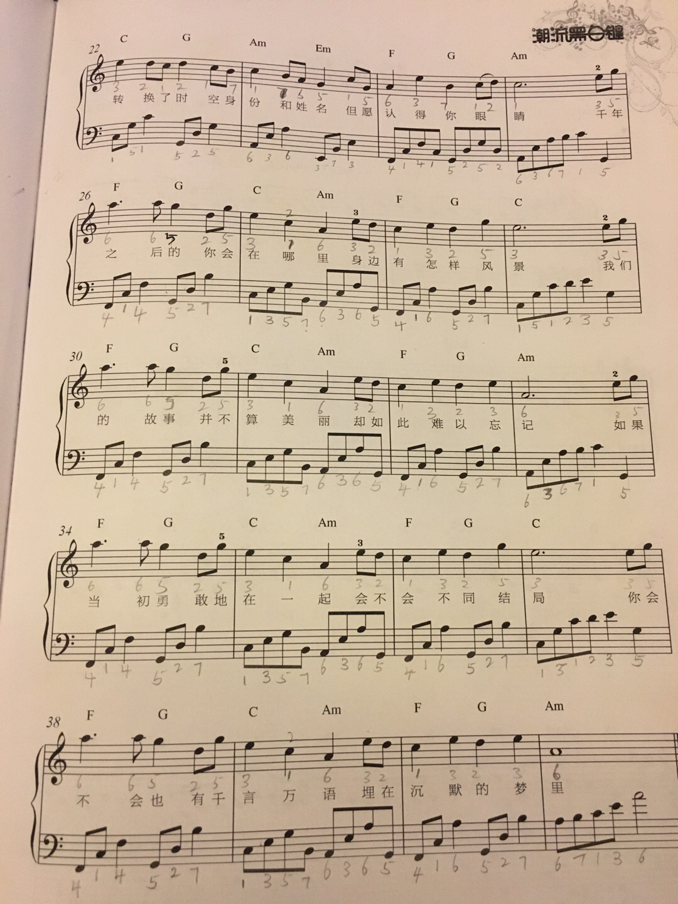
这个是金沙的 星月神话的谱子，当时听这个钢琴曲觉得挺好听，就找到了谱子。
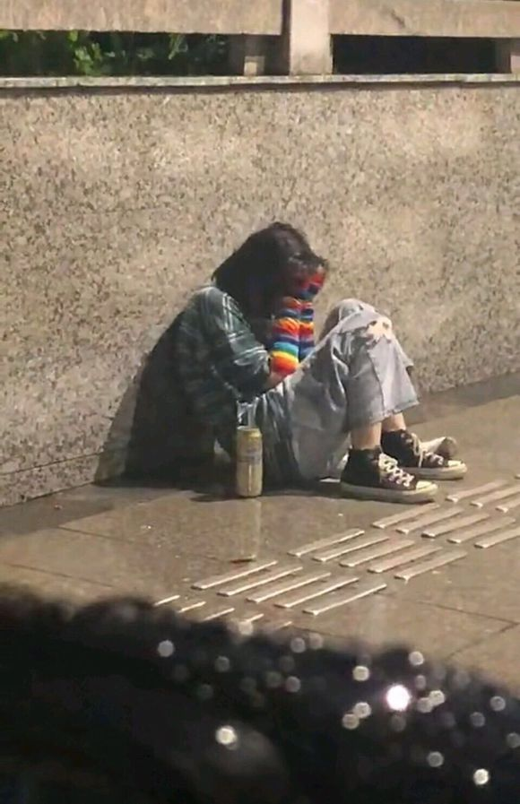
这个就哈哈，看起来很像是bia在喝酒后为我哭泣，呜呜呜的画面，让人心疼。
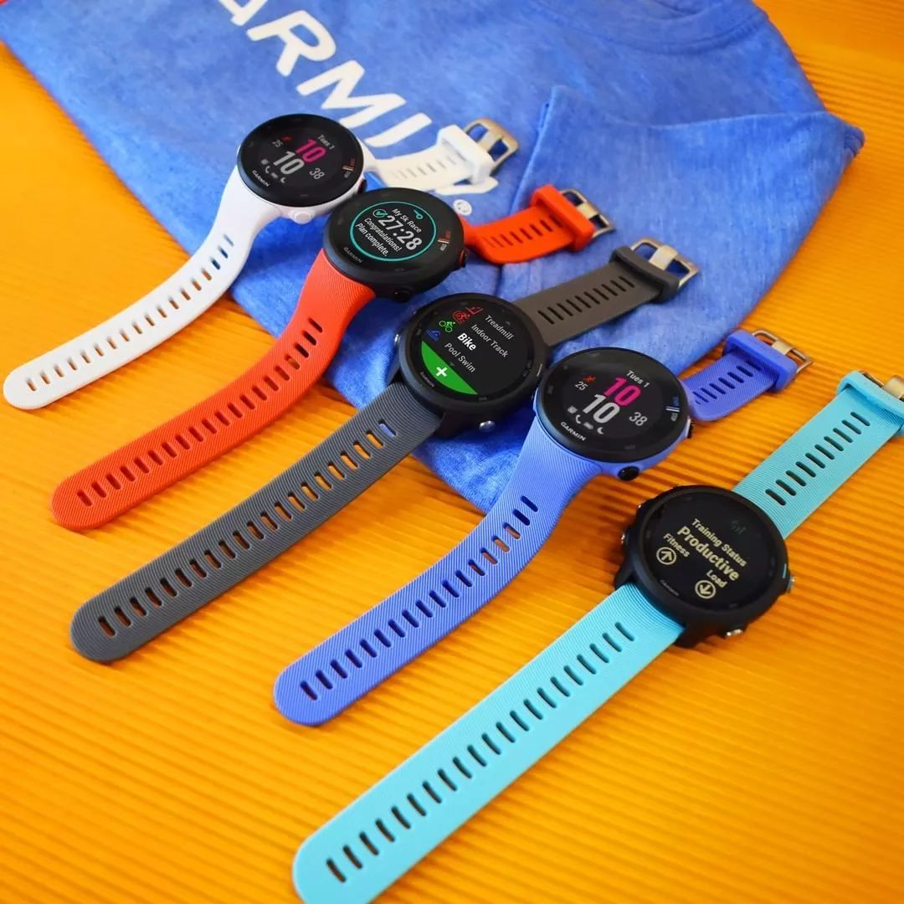
Garmin Forunner245的 几种配色，这里面我最喜欢的就是白色和天蓝色，但是我带天蓝色不好看，如果是bia带应该好看吧，不过bia不太喜欢运动，所以这东西也没什么用，这智能手表如果不运动全都是鸡肋。